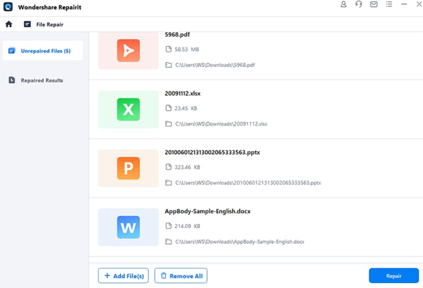

The Best Data Repair Tool for Excel Files Restoration
Microsoft Excel is a helpful financial tool many users use to keep their data organized in spreadsheets. While it offers a lot of features to streamline data organization, there are instances where its files may become corrupted due to technical errors. In such cases, you need a reliable solution for your file restoration.
Part 1: Multiple Ways to Determine Excel File Corruption
Before repairing the corrupted Excel files, you should be able to determine your Excel file corruption. It really helps to check whether your files are in good health or need restoration treatment. Therefore, here are some common ways to check file corruption quickly:
-
Files Not Displaying: If your Excel files are not loading on compatible devices or apps, it shows that your files are corrupted. It can happen due to various logical errors, so it shows different error codes instead of opening the sheets.
-
Distorted Layout: Sometimes, the layout or formatting of a document gets changed due to errors. This affects the structure, and you cannot read the document properly. So, the distorted layout identifies that your Excel file is not normal.
-
Unreadable Content: By chance, if your file has been damaged or corrupted, you cannot read or access its data. In that case, a compatible application can also not display the file for reading. This type of file breakdown issue also shows that the Excel file is corrupted.
-
Malware Attack: Some documents are susceptible to malware attacks. If your Excel file has gone through this issue, you may see a distorted, unclear, or unreadable format. So, these kinds of ways allow you to determine Excel file corruption.
Unique Benefits of Repairing Files with Wondershare Repairit
If millions of people are using Wondershare Repairit, it means this software carries exceptional features. Here are some potential benefits that clarify the reason behind its popularity:
-
Seamless File Restoration: In any case, if your essential data files get damaged, you can restore them efficiently. Repairit enables you to repair tons of corrupted files within no time. Moreover, you can retain the same quality and formatting without losing anything.
-
Smooth Functionality: Having a user-friendly interface for any tool is the primary concern of non-technical users. Repairit provides ultimate support with a user-centric interface and lenient functionality for all worldwide users.

Conclusion
To summarize, this article provides the optimum file repair tool to restore your distorted files. Wondershare Repairit allows you to repair corrupted Excel files online or offline with comfort. It can also help prevent corruption issues like format errors, unreadable files, distorted layouts, etc. Moreover, users can learn the benefits of using it in this guide. So, use this file repair tool to give your corrupted files a new lifeline.